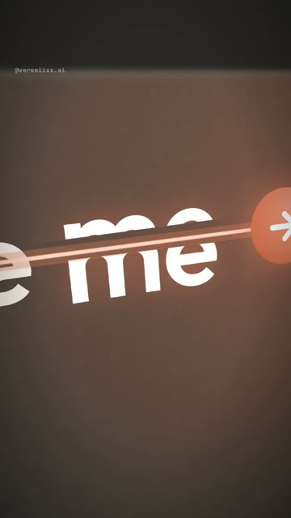
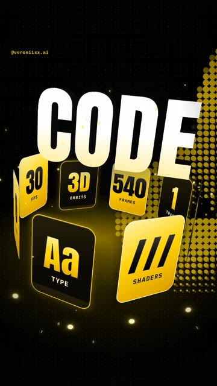

Cut to
the beat.
By code.
How I built an 18-second showreel to a music track in Claude Code: the arrow that shoots through words, the window that shatters on the drop, the camera that chases it. From install to a finished mp4. Windows and Mac.




What you get
A vertical 1080×1920 reel where every move lands on a hit in your own track. You describe what you want in words. Claude writes the code, measures the music, renders the frames and assembles the file.
What you need
- A Windows 10/11 or macOS computer. I rendered this on a laptop with integrated graphics and 3 GB of memory: it works, it is just slow.
- A Claude plan that includes Claude Code.
- A music track you are allowed to use. See the note on music below.
Three rules that made it
Why measuring beats matters
A model cannot hear your track. If you say “put the explosion on the drop”, it will guess. Ask it to measure the audio instead: loud low-band onsets are bass hits, sharp high-band onsets are claps, a stretch below −60 dB is silence. In my track the silence lasted 0.75 seconds and the drop came back at frame 189. Everything else hangs on numbers like that.
Why one hero
A cut without a cause looks like a mistake. A cut caused by something on screen looks like a trick. The arrow types the prompt, becomes the button, gets clicked, breaks the window, flies through the words and returns to the button at the end.
Less is more in the middle
My fourth version had trails, floating shards, extra props around every word. It was too much. The fix was to remove things until only the arrow and the word were left.
Install the tools
1Open a terminal
Windows Press Win, type PowerShell, open it.
Mac Press Cmd + Space, type Terminal, open it.
2Node.js, Git, Python and ffmpeg
Windows Paste one line at a time. Answer Y when asked.
winget install -e --id OpenJS.NodeJS.LTS winget install -e --id Git.Git winget install -e --id Python.Python.3.13 winget install -e --id Gyan.FFmpeg
Mac Homebrew first, it will ask for your password. At the end it prints two lines under “Next steps”: run them, then run the second command.
/bin/bash -c "$(curl -fsSL https://raw.githubusercontent.com/Homebrew/install/HEAD/install.sh)"
brew install node git python ffmpeg
3Claude Code
npm install -g @anthropic-ai/claude-code
Prefer an app to a terminal? Install Claude from claude.ai/download, it has a Code tab that does the same thing.
Folder and first prompts
1Create a folder and start Claude
mkdir showreel cd showreel claude
2Setup
Set up a motion-graphics project in this folder. 1. Install Remotion (React 18 + TypeScript). 2. Check that Python has numpy and scipy. Install what is missing. 3. Check that ffmpeg works from the terminal. 4. Build a test composition, 1080x1920, 30 fps, with one 3D-transformed card and one line of text. Render a single frame to PNG and show me the path. If something is missing, install it yourself and tell me what you installed. If something fails, do not stop: find the cause and fix it.
3Measure your track
Put the mp3 in the folder and send this. Replace what is in square brackets.
I put a music track at [path/to/track.mp3]. I want a reel cut to it, starting at second [6] of the track and running for [18] seconds. Before you design anything, measure the track with Python (numpy + scipy, decode with ffmpeg): 1. Tempo in BPM and the length of one beat in frames at 30 fps. 2. Every bass hit: band-pass 35-140 Hz, find the onsets, give me frame numbers. 3. Every clap or snare: band-pass 2500-9000 Hz, same thing. 4. Any silence longer than 0.3 s and the exact frame where the sound comes back. 5. Per-frame loudness of the low band, so the picture can pulse with the bass. Save all of it to beats.json and print a short table. Do not guess any timing by ear: every event in the reel will use these frame numbers.
The reel brief
Replace what is in square brackets with your own words, colours and handle. The rest can stay.
Build a showreel cut to my track. 18 seconds, 540 frames, 30 fps, 1080x1920, H.264 CRF 18, yuv420p. All on-screen text in English. Use the frame numbers from beats.json for every event. IDEA I type a prompt into [Claude Code], hit send, and the prompt becomes the film. ONE HERO The arrow from the send button. It is in every part and it causes every transition. PARTS 1. INSIDE THE PROMPT (start to the last bass hit before the silence). The camera is inside the input field, extreme close-up, tilted in 3D. On every bass hit the arrow shoots through the next word of "[Make me a showreel you can't stop watching]" from left to right. The word is revealed by the arrow, splits in half along the path, flashes and closes again. The camera whips to follow the arrow and keeps drifting between hits so the frame never stands still. 2. THE REVEAL (the silence in the track). The camera pulls all the way back: it was a [Claude Code] window the whole time. The arrow docks as the send button. A mouse cursor arcs in and clicks it on the last frame of silence. 3. THE BREAK (the drop). The window shatters into about 70 triangular shards flying away from the button in 3D, the button breaks into wedges, sparks, one shockwave. The arrow launches out of it. 4. THE CHASE (drop until the last clap of the second bar). Dark warm space. The arrow flies along a path and on every clap it pierces one giant word: [THIS / REEL / WAS / NEVER / EDITED / NO CAMERA / NO TIMELINE / NO KEYFRAMES / JUST / CODE]. Words sit at different angles, some stand upright. The camera chases the arrow and rolls to align with each word. Every word answers the hit with its own move: one spins, one tips over, one is struck through in red, one is cut into strips, one flips, one falls flat, one jumps, the last one scrambles through code symbols and resolves. The light warms from clay to gold along the way. One bright frame on every clap. 5. THE CAROUSEL (third bar). The word [CODE] stays still. Cards orbit it in real 3D depth, passing in front of and behind it. The background changes four times a second. 6. THE ANSWER (to the end). The shards fly back and rebuild the window: the explosion played in reverse. The assistant answers "[Done.]". RULES FOR TEXT No blur, no shake on text. A word must be whole and readable for at least a third of a second. No letter may be cut by the frame edge: shrink long words. The only small text is "[@my_handle]" at the top. LOOK Dark warm background, cream type, one accent [#D97757]. Light, glow and gradients instead of flat fills. Film grain and a soft vignette over everything. SHARPNESS Text that the camera zooms into must be drawn at five times its size and scaled down, otherwise the browser stretches a small bitmap and letters come out jagged. WORKFLOW 1. Create the files. Type-check must pass. 2. Render about 50 key frames into one contact sheet and look at it yourself. 3. Self-QA every part and every join: cut letters, text off frame, black frames, words that are unreadable. Fix and re-render. 4. Render the final mp4 with the track, plus a copy without sound. 5. Check the finished file: duration, frame count, and crop two close-up frames at full size to check sharpness. 6. Tell me in one message: file path, size, what you checked and what you could not check. Do not stop until there is a finished mp4.
How to fix it with notes
The first render is never the final one. Watch it and say what is wrong. These are close to the notes I actually sent:
The first part is not dynamic, not on the beat, and it drags. Make the arrow shoot through the words like a pulse and let the camera follow it.
The break on the click is not epic enough and I cannot see the button breaking. Shatter the whole window into pieces from the button.
The flat yellow looks cheap. Keep the look of the first part: dark, warm, light and glow instead of fills.
The middle needs an idea, not more effects. Make every word react to the hit in its own way.
Too many things at once. Remove the trail and the floating shapes. Just the arrow and words that spin or fall. Keep the flashes.
Some words are unreadable because they are fast and split in two. Each word must be whole for at least a third of a second.
What broke for me
- Blurry close-ups. When the camera zoomed into small text, letters came out jagged: the browser was stretching a small bitmap. The fix is in the brief: draw that text five times larger and scale it down.
- A dark bar through every word. The two halves of a split word did not meet by 30 pixels. It survived four versions because it looked like a design choice. Crop a frame at full size and look.
- Black frames in the shader shots. On integrated graphics the heavy shaders did not finish in time and the renderer lost 3D. Rendering them at half resolution fixed it.
- Claude cannot hear or see motion. It checks still frames and numbers. How the reel feels to the music is yours to judge, so expect several rounds.
- Slow render. About ten to fifteen minutes for 18 seconds on a weak laptop.
A note on music
If your track is a commercial song, do not bake it into the file you post. Platforms can mute it or limit reach. Build the reel to the track, export a copy without sound, and add the same track from the platform's own music library at the same second. If you have a licensed or original track, bake it in.
Common questions
Will I get the same reel?
Similar in structure, not frame for frame: Claude writes the code from scratch each time. Change the words, the colours and the track to make it yours.
The terminal shows a red error. Now what?
Copy it and paste it to Claude with the words “here is the error, fix it and continue”.
Do I need the 3D carousel and shaders?
No. Remove part 5 from the brief and go from the chase straight to the answer. The first two thirds are plain web layout in 3D and render on anything.